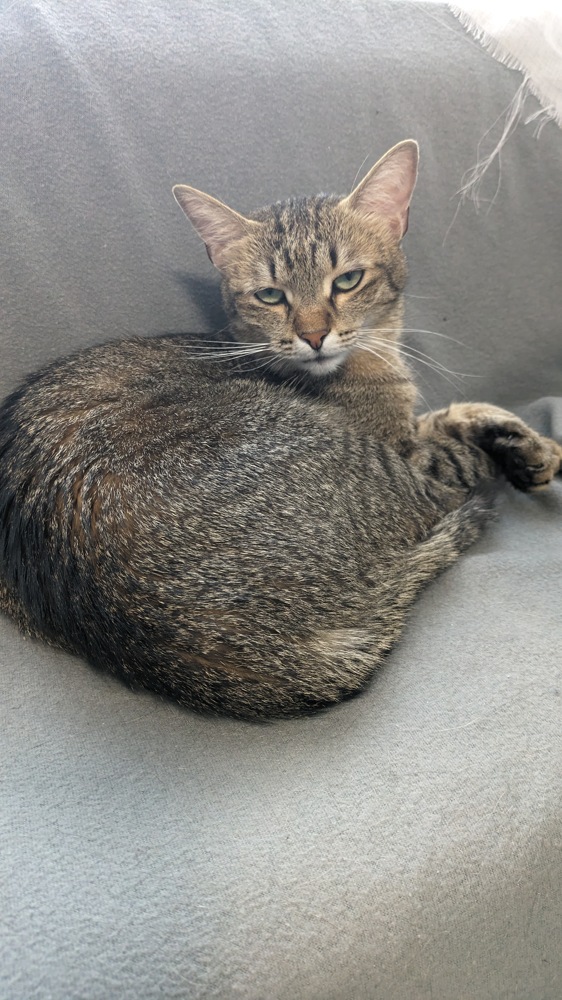
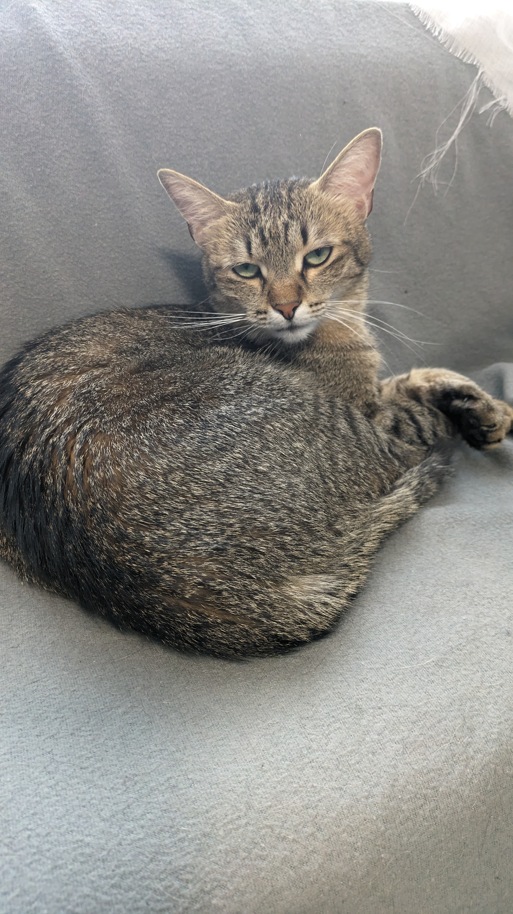

Cursul 2
Imagini
Imaginile sunt elemente self-enclosing, adica fara continut, adica au un singur tag, nu unu de deschidere si unul de
inchdiere.
Acestea functioneaza in baza atributului href.
 

Listele
Acestea pot fi de 2 feluri:
- Ordered List - Elemente ordonate (de obicei numerotate)
- Unordered List - Elemente neordonate (de obicei cu punct)
Line breaks
BR - break rule
Treaba asta ne va pune un rand nou.
Dupa cum putem vedea, br este un self-enclosing tag.
Adica nu are inceput si sfarsit.
HR - horizontal rule
Acest element va introduce si o linie orizontala in pagina.
Stilizarea simpla a textului
- Bold ingroasa textul
- Italic inclina textul
- Underlined subliniaza textul
- Subscript face un text mai mic, ex pt formule chimice: H2CO3 este motivul pt care ne
balonam de la apa minerala.
- Superscript face textul mai mare si il muta sus: 8 = 2^3 = 23
Modificatoare text cu inteles semantic:
- Strong inspira o intonatie puternica, si ingorasa si textul.
- Em (emphasis) inspira o intonatie de asemenea puternica (dar mai putin), si inclina textul.
Inapoi la cursul anterior
Mai departe